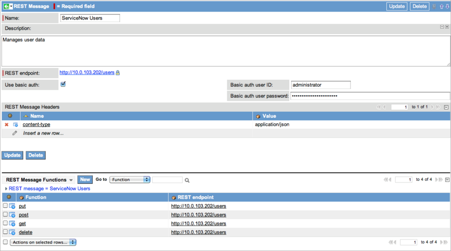
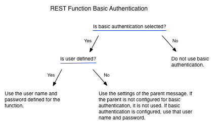
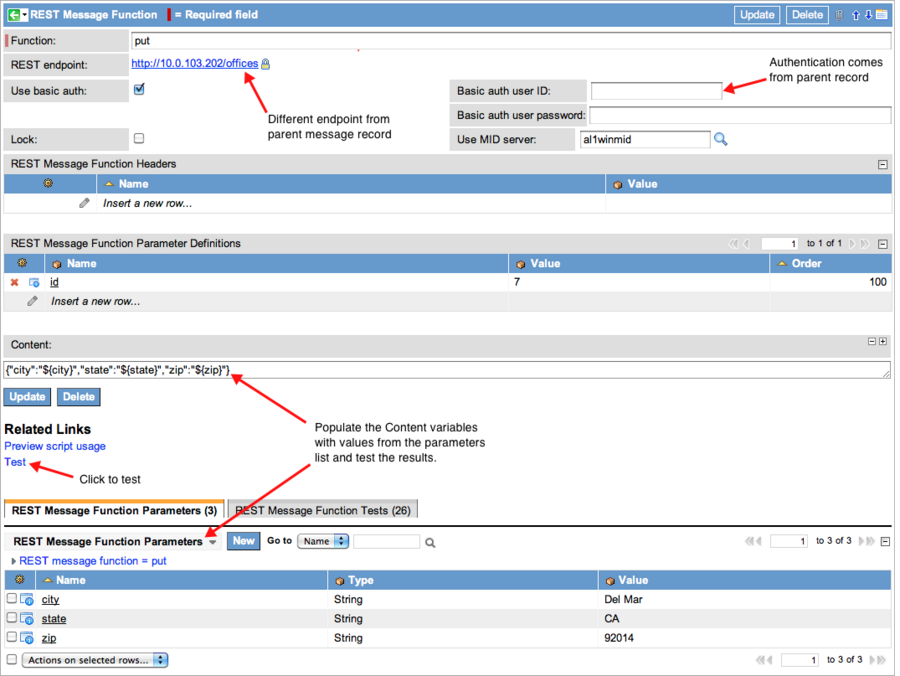
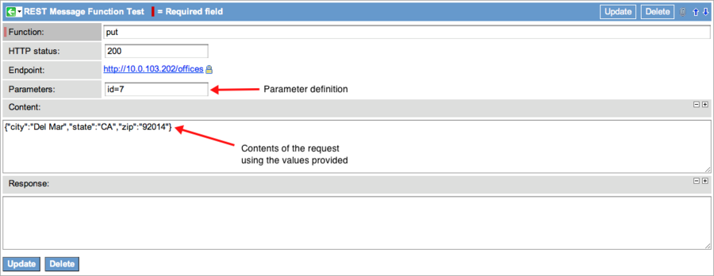
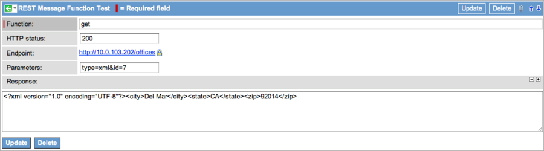
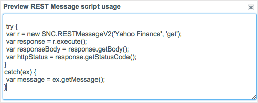

Outbound REST Web Service
| |
Note: This article applies to Fuji. For more current information, see Outbound REST Web Service at http://docs.servicenow.com
The ServiceNow Wiki is no longer being updated. Please refer to http://docs.servicenow.com for the latest product documentation. |
Contents
1 Overview
ServiceNow outbound REST functionality allows you to retrieve, create, update, or delete data on a web server that supports the REST architecture. You can send REST messages from a MID Server, which allows REST to access an internal network. You can send REST messages using scripts or a workflow activity to retrieve or manage data on a REST endpoint, and then use the returned response in your ServiceNow instance.
ServiceNow REST functionality is flexible enough to accommodate many web service APIs. Be sure you are familiar with your web service and the parameters it accepts before attempting to define a REST message in ServiceNow. The examples used here are configured for a specific web service API and are not intended to represent your environment.
| |
Note: The outbound REST web service UI and script API are significantly enhanced with the Fuji release. This page describes the current behavior. For previous version information, see Outbound REST Web Service - Versions Prior to Fuji. |
2 Video Tutorial
The following video tutorial demonstrates how to configure outbound REST web service messages to consume third-party web services from the ServiceNow platform. Applies to all supported releases as of Fuji.
| Web Services: How to Consume Third-Party REST Web Services |
|---|
3 REST Web Service Example
| View the REST web service configuration used for the examples on this page. | ||||||||||||||
|---|---|---|---|---|---|---|---|---|---|---|---|---|---|---|
|
This REST-based web service manages very simple records of offices and users at a company and is configured as follows.
|
4 REST Message
ServiceNow sends requests to a REST endpoint using a REST message. A REST message contains the following elements:
- Endpoint: The URL of the data to be retrieved, updated, or deleted. The endpoint can be defined at the top level of the message, at the method level, or in the REST message workflow activity. The endpoint configured in the activity takes precedence over the other endpoints defined. The examples on this page show two collections: /users and /office, which were created in the example web service.
- Headers: The HTTP headers in REST messages carry the information about the data format. They apply to all methods in that message unless the header is overridden in the method definitions. Headers cannot be set in the REST message workflow activity.
- Methods: The HTTP methods—PUT, POST, GET, DELETE—interact with the data at the endpoint. Override the endpoint or header defined in the REST message by specifying alternative values in the method definitions. Each REST Message workflow activity calls a single method to perform work on the endpoint.
4.1 Configuring a REST Message
- Navigate to System Web Services > Outbound > REST Message.
- Click New.
- Complete the following fields and lists:
- Name: enter a unique and descriptive name for this message.
- Description: enter a description of this message.
- Endpoint: enter the endpoint that applies to all the methods for this REST message. This is a required field, but the endpoint configured here can be overridden at the method level.
- Use basic authentication: select this check box to display the user name and password fields for configuring basic authentication for this message. These credentials are included in the message header. Authentication configured here is inherited by the methods when the new record is submitted. If basic authentication is changed after the HTTP method record is created, the method does not inherit the updated authentication settings. You can configure basic authentication for each method, which overrides any authentication setting at the message level. See HTTP Methods for additional details about authentication at the method level.
- HTTP Headers: double-click a row in this related list to define the name-value pair for the header in this message. See List of HTTP Header Fields for a list of HTTP header fields.
- Click Submit.
- The system saves the record and automatically creates the methods (GET, PUT, POST, and DELETE).
- 
{kind=link}
4.2 HTTP Methods
HTTP methods perform the data requests that update, create, retrieve, or delete data at the endpoint with a REST message.
When you create a REST message record, several default HTTP methods are automatically created using settings inherited from the REST message record, such as the Endpoint. Subsequent changes to the REST message record are not applied to the HTTP methods automatically. You can create additional HTTP methods or modify the default HTTP methods to implement new behavior.
This example uses PUT to add data to a different REST endpoint than that defined in the parent REST message and then returns that data with GET. The concepts shown in this example apply to all method definitions. The parameters used in these procedures were configured for the web service described under REST Web Service Example.
- Navigate to System Web Services > Outbound > REST Message.
- Open the appropriate REST message and select the PUT method.
- The PUT method record displays the settings of the parent message when it is first opened.
- Click the lock icon in the Endpoint field and edit the method to override the endpoint, replacing /users with /offices.
- The HTTP Methods related list in the parent REST Message record shows any changes to the endpoint made at the method level.
- Leave the following fields blank:
- Name and Value in the the HTTP Headers embedded list
- Basic authentication user ID
- Basic authentication password
- The method uses the values configured for those elements in the parent REST Message record.
- Select the Use basic authentication check box.
- This selection forces the method to use the basic authentication configured in the parent record. The diagram describes how basic authentication is determined for REST messages.
- 
- Select a MID Server to use for this method.
- Using a MID Server for REST messages enables an administrator to make data requests from an instance to a web services provider within a protected, local network.
- If the REST endpoint accepts parameters, create a parameter definition in the HTTP Query Parameters embedded list.
- Parameters are available for all methods and can be used for a variety of operations. The REST message includes all values that match the definitions provided in the Order specified. This PUT uses a parameter where the Name is id and the Value is 7 from the sample web service.
- Place the following statement in the Content field to pass content into the request. The Content field is only available for the POST and PUT methods.
- {"city":"${city}","state":"${state}","zip":"${zip}"}
- The format for the content must match the format expected by the web service. In this example, the web service expects city, state, and zip in JSON format for the /offices endpoint.
{kind=link}
The method is now configured. You can test the request to ensure the behavior is as expected.
4.2.1 Sending a Request Through a MID Server
You can configure an HTTP method to be sent through a MID Server. By using a MID Server, the request can reach an endpoint that is behind a firewall or within a private network. To configure an HTTP method to use a MID Server, select a MID Server in the Use MID Server field. The instance must have an active MID Server to use this functionality.
4.2.2 Testing a Method
To test the request, manually define the parameter values to send.
- In the Variable Substitutions related list, click New.
- Add test values for these variables:
- city: Del Mar
- state: CA
- zip: 92014
- The web service used for this test expected parameters of city, state, and zip. Your parameters will likely differ.
- 
- Under Related Links, click Test to determine whether the parameter definitions are configured properly.
- This action submits the record and then runs the test. The test sends the PUT request to the endpoint and updates the data at ID 7. The test results of the PUT method show that the values of Del Mar, CA, and 92014 were added to the endpoint at ID 7. In this example, the web service did not return a response body. If it had, the body would be shown in the Response field.
- 
- Return to the HTTP Method form for the PUT method.
- Click the Preview script usage link to generate JavaScript you can use to call this method from other parts of the ServiceNow instance, such as business rules.
- To retrieve the data just added, open the GET HTTP method record and specify the Endpoint of /offices.
- Configure definitions for the parameters you want to return from the collection.
- This example includes the definition Name is type and Value is xml to return the data with ID 7 in XML format.
- Define the Order in which the parameters are sent.
- Save the record and click Test.
- The response contains the XML data from the collection and all the data from ID 7.
- 
- To generate a script template from this configuration, return to the GET record HTTP Method form and click the Preview script usage link.
{kind=link}
{kind=link}
{kind=link}
{kind=link}
4.3 Using Special Characters in URIs
A REST endpoint URI or variable may use special characters, such as pipe (|) characters. When using these characters in a REST message, use URL encoding to escape these characters. For example, to use a parameter value of user|title, enter user%7Ctitle. Entering special characters directly may cause the REST message to fail and display the response Invalid uri <URI>: Invalid query.
5 Variable Substitution
Variable substitution is allowed in the URL of the endpoint, the value fields of the HTTP headers and parameters, and the Content field, depending on the method. The syntax for variables is ${variable_name}. The REST message substitutes this variable with the parameter values provided when the method runs. For example, if the endpoint is expressed as http://myserver.mycompany.com/offices/${id}, a parameter named id must exist and contain a value that can be used when the method runs.
Variable substitution is used as follows for REST methods:
- GET: has HTTP parameter definitions that become name-value pairs in the URL when the request is sent. The sequence defined in the parameter Order field determines the order that the parameters are sent.
- PUT: uses a content expression for putting text content via HTTP at the endpoint site specified. Variable substitution is allowed in the Content field.
- POST: uses a content expression for posting text content via HTTP. Variable substitution is allowed in the Content field.
- DELETE: does not use content expressions. Variable substitution is allowed in headers and the endpoint URL.
6 Scripting with REST
You can call REST methods from any place in the ServiceNow platform where scripting is allowed. For example, you can return data from a REST endpoint using a business rule when an event is triggered. Create a script from scratch or let the REST message preview feature create the script based on content and parameters you provide in the method record.
To generate JavaScript code to send your REST message:
- Navigate to System Web Services > Outbound > REST Message.
- Open a REST Message record.
- In the HTTP Methods related list, open a method record and define the method, including any variables.
- Save the record.
- In the Variable Substitutions for Tests related list, assign a value to each variable.
- Under Related Links, click Preview script usage.
- The instance displays the script that the REST message generated for this method.
- 
- Copy this script and modify it as needed to use elsewhere in the instance.
{kind=link}
6.1 Additional Scripting Methods
An API detailing scriptable methods for outbound REST messages and the returned REST response is available starting with the Fuji release. Outbound REST scripting examples are available. For older versions, see the previous version information.
7 Mutual Authentication
Mutual authentication causes the web service provider and consumer to authenticate with each other before communicating. ServiceNow supports mutual authentication for outbound web services, starting with the Fuji release. Mutual authentication is not available for inbound web services or for outbound web services that use a MID Server.
8 Enhancements
8.1 Fuji
- The glide.outbound.sslv3.disabled system property can disable the SSLv3 protocol for outbound connections.
- The labels and field help for fields on the REST Message form and related forms have been updated to use industry-standard terminology.
- Mutual authentication is available for outbound web services that do not use a MID Server.
- The RESTMessageV2 API and RESTResponseV2 API provide enhanced interfaces for sending outbound REST messages using scripts.